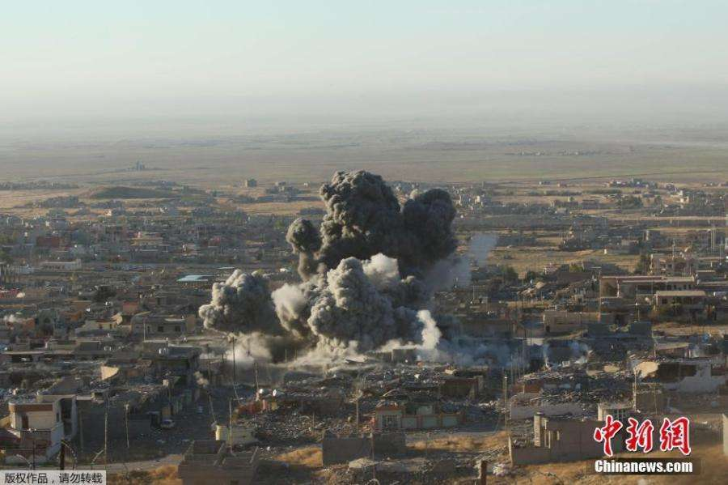
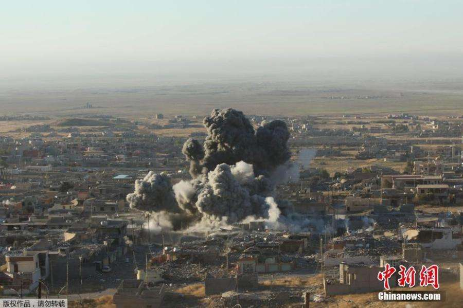

news1
7月26日 南岛皇家空军为执行北约波罗的海巡逻任务 派往爱沙尼亚的6架F-15C 6架F-16C战机抵达爱沙尼亚空军基地。这两型战机分别来自南岛本土A8鹿儿林洲空军基地 A7阿姆南空军基地。将在爱沙尼亚执行一段时期的波罗的海上空巡逻任务。爱沙尼亚国务卿表示：“这批到达的南岛飞行员已全部做过核酸检测。爱沙尼亚的疫情已基本控制 并且南岛也派来了为应对突发疫情的先进设备与医护人员 在执行维护领空安全任务的同时 我们也会时刻注意北约军事人员的身心安全”。近期 俄罗斯派轰炸机和侦察机经常在波罗的海领空飞行 对爱沙尼亚 立陶苑 拉脱维亚的领空构成了威胁。南岛皇家空军司令部发言人表示：“之前 俄罗斯苏-27战机在波罗的海领空秀肌肉 干扰北约正常飞行。南岛首次派出主力战机到该区域 以在维护北约利益和警告俄罗斯。” 英国简氏防务周刊分析：“南岛皇家空军的F-15和F-16机队的飞行员训练水平极高 有部分实战经验 曾在阿拉斯加的红旗军演中表现出色 在其他演习中击败过印度空军俄制苏-30MKI战机和马来西亚苏-30MKM战机”。此次南岛派出实力强劲的飞行员执行任务。若俄罗斯苏-27战机飞行员再次做出之前的飞行举动 南岛势必会让俄罗斯飞行员真正见识南岛飞行员的实力。现阶段 北约执行波罗的海上空巡逻任务主要由英国皇家空军台风战机和南岛皇家空军F-15C F-16C执行。
news2
随着近数个月以来全球多国正陷入疫情中 许多国家因应对疫情已经撤回了许多在中东反恐的士兵。全球疫情期间 一些恐怖组织正在试图复苏。从6月初开始 南岛皇家海军的“空岛”号空天母舰就进入了伊拉克领空打击正在复苏的IS极端组织。之前驻伊拉克的欧洲军队已大部分撤军。北约驻在伊拉克反恐的力度大大减少。南岛国防军果断地派出航母以防止IS的复苏。南岛国会人员发言称：“在全球抗击疫情的同时 也不要松懈反恐力度。近些年来在叙利亚和伊拉克打击”伊斯兰国“极端组织的效果非常显著。决不能让恐怖组织趁着疫情期间卷土归来。在这种时期 南岛会加大反恐力度 维护世界秩序。”昨日18:20南岛“空岛”号航母出动了4架F-15K满载制导炸弹对伊拉克北部靠近叙利亚边境的IS实施了猛烈空袭。摧毁了该区域IS的火炮阵地和卡车。随后南岛驻在约旦的空中国民警卫队战机LC-002攻击机对该区域的大量IS人员进行了地毯式轰炸。由于疫情期间不方便派地面部队执行任务 目前暂时仅用空中力量打击恐怖组织。
 

news1
由于近些年来西非海域几内亚湾海盗猖獗，已取代曾经的索马里成为全世界最危险的海域之一。该海域有丰富的石油运输和开采。海盗们经常为了石油利润劫持油轮。11月14日 正在几内亚湾执行巡逻任务的意大利海军“马尔蒂嫩戈”号护卫舰当天对遭遇海盗袭击的“振华7号”商船（船籍为利比里亚，船员为中国籍）实施援助。主要原因是尼日利亚有大量油轮出海。这里的海盗并不太喜欢绑架人质索要赎金，其作案主要是洗劫经过的油轮，因为抢劫、转卖原油来钱更快。为了维护海上秩序和海域安全。南岛国防军决定派出军舰在该海域执行为该区域商船 油轮提供护航的海上巡逻任务。11月16日上午9:00 南岛皇家海军的“狮子座”号V型宙斯盾导弹驱逐舰 “千露”号导弹巡洋舰2艘军舰从南岛皇家海军C-12“乔巴 鲁尔曼”海军基地起航。开始前往西非几内亚湾执行维护海上秩序与和平的任务。此次南岛皇家海军派出的2艘军舰搭乘了近60名海军陆战队E队精锐士兵。以在突发状况时能够应对。南岛皇家海军一名中将表示：“若该海域出现不可预知的难以应对的状况 海军陆战队特种部队OSON'黑刀'会赶往该地区。”
南岛皇家海军派出的2艘军舰离开C-12海军基地出航
分享

news1
11月10日 南岛皇家空军派往以色列参加南岛与以色列举行联合军演的4架台风战机抵达以色列。南岛派出的4架台风战机将与以色列空军F-16 F-35战机举行为期2周代号为“沙漠雷电”的空战演戏。南岛皇家空军司令部发言人表示：“此次演戏是为增强两国空军的联合作战能力 加强两国防务交流 探索新的空战模式。” 简氏防务周刊分析认为：“以色列空军训练水平极高 在全球仅次于美国 南岛皇家空军派战机与以色列空军交流是为进一步提高南岛皇家空军的素质 两国空军相互交流先进的作战思想。以色列空军和南岛皇家空军都有极为丰富的实战经验，飞行员出色。南岛国防军正在加强与以色列的军事交流 有利于南岛和以色列在中东地区作战的军事合作和情报共享。以色列和伊朗是宿敌。南岛国防军在中东打击的胡赛武装 什叶派武装也是由伊朗支持的。未来 不排除以色列和南岛会合作对抗伊朗在中东的军事威胁。”
11月15日17:50 以色列空军出动了一架F-35I战机飞越黎巴嫩上空对真主党恐怖武装进行了空袭，途中南岛皇家空军的2架台风战机随同进行伴飞。但南岛2架台风战机只挂载了4枚空对空导弹，没有进行空袭。
分享
news1
3月20日 南岛皇家空军向非洲吉布提C-16O海军基地派遣了12架FLQ-4K无人攻击机 并部署至南岛皇家海军驻吉布提C-16O海军航空站。此次南岛向该基地派无人机是为了打击非洲头号恐怖组织“索马里青年党武装”。就在数月前 南岛与澳大利亚 美国 德国 法国 以色列 俄罗斯 印度 巴基斯坦 加拿大 阿联酋 埃及 希腊 南非 约旦 巴西举行了关于加强全球反恐的会议。南岛在会议上多次提出联合各国打击非洲恐怖组织的计划。由于索马里青年党武装经常制造恐怖袭击 严重扰乱索马里秩序 百姓生活困苦 没有保障。此次的部署表明南岛已着手开始打击索马里青年党恐怖武装 为非洲反恐出力。4月17日 南岛驻吉布提C-16O海军航空站出动了3架FLQ-4K“敏捷鹤”无人攻击机携带多枚小直径炸弹和DS-T1“愤怒者”空地导弹 空袭了索马里东部的青年党武装的一处基地和2批车队 空袭炸死了40余名青年党武装分子 摧毁17辆该武装车辆。南岛国防军打响了打击索马里青年党恐怖组织的第一枪 南岛国防军将继续进行打击非洲头号恐怖组织的行动 为非洲的反恐与和平贡献力量以及展示南岛国防军为世界反恐的决心。
news2
因受疫情影响 3月12日 南岛国防军下令撤回部分海外驻军；此次撤军是因疫情影响的暂时撤军 具体撤军情况如下：南岛皇家空军在韩国木浦空军基地的12架F-16MLU 南岛皇家空军在日本航空自卫队新田原空军基地的8架F-15SG 12架F-16MLU以及这些战机飞行员和一些后勤人员全部返回本土；南岛在日本千岁空军基地的所有战机飞行员和后勤人员返回本土 战机不撤回。南岛国防部表示：“这些撤回的军事人员和装备何时重返该国部署尚未决定 之后会根据疫情情况决定。”3月26日 南岛在非洲吉布提的GNOT特种部队与在叙利亚部署的SESZ特种部队已全部返回本土。4月上旬 在也门 多国联军与胡塞武装为抗击疫情 达成暂时停火协议。4月5日 南岛国防军总参谋表示：“南岛部署在也门的部队不会返回本土 为了以防万一 这些部队将继续留在该地以应对突发状况。
分享
24日清晨05时21分 在亚丁湾南岛皇家海军2艘驱逐舰劫持一艘可疑运输船只。剧南岛国防部长透露：“在劫持这艘船只之前经南岛国防军用卫星电视发现这艘可疑船只是伊朗给也门胡塞武装运输武器补给的船只。” 随后南岛皇家海军出动驻吉布提海军基地的“安尼尔”号导弹巡洋舰和“南极之风”护卫舰对这艘伊朗运输船实施了拦截 在无视警告之后 “安尼尔”号导弹巡洋舰对这艘运输船实施了炮击导致这艘运输船无法正常前行 随后南岛派出GNOT（快速机动反应部队）特种部队一支小队乘坐2架SH-60K“海鹰”直升机绳索空降登上运输船 并击毙7名士兵，抓获3名负责人。有分析认为：“此次行动意味着南岛国防军已决心切断也门胡塞武装来自伊朗的一切装备补给 通过劫持伊朗运输船 南岛可通过这艘船只的编号和审问人质的手段 方便劫持以后更多支持胡塞武装的伊朗运输船。”
-----“安尼尔”号导弹巡洋舰对伊朗运输船开炮
-----GNOT特种部队登船
中东局势升级 南岛近些日的行动包括“派驻约旦南岛空中国民警卫队战机空袭伊拉克境内伊朗代理的什叶派武装 昨日空袭伊朗驻叙利亚军事设施 强力打击也门胡塞武装” 已向伊朗展示了南岛国防军支持和维护美国及其盟友利益的态度。南岛国防军总司令表示：“奉劝伊朗不要对胡塞武装提供支持 如果继续这样的行为 伊朗及其胡塞武装将会付出惨重代价。”“南岛 英国 澳大利亚 巴林 阿联酋以及之前法国派戴高乐号航母抵达中东 伊朗面临的对手越来越多； 南岛驻吉布提的舰艇随时做好装备 如果美伊开战 这些舰艇将立即进入波斯湾与盟友支持美国对伊朗的军事行动。”
分享
news1
本月23日18点整 南岛皇家海军在非洲亚丁湾的“狮子座”号宙斯盾导弹驱逐舰发射了一枚“火锤”巡航导弹成功摧毁也门胡赛武装的导弹基地；根据南岛卫星电视 南岛国防部长表示：“此次空袭中胡赛武装所有弹道导弹均被摧毁 这是南岛对胡赛武装袭击沙特联军设施的回应和警告。”
news2
随着美伊矛盾加剧 胡赛武装的武器是由伊朗支持 伊朗在利用代理武装实施对美国盟友的袭击。就在南岛打击胡赛武装的同日傍晚19:40；南岛皇家海军在地中海的“空岛号”空天航母出动2架F-15K战机携带数枚“毁灭者”重磅炸弹进入叙利亚空袭并摧毁伊朗一处弹药库和一处指挥所。有分析认为“这是南岛对伊朗支持胡赛武装的警告和回应。” 意味着在叙利亚战场上 驻叙利亚伊朗军队今后可能不仅会面临以色列的打击 还会面临南岛的打击。
分享
news1
12月26日-12月28日 就在南岛国防军与美军在阿富汗强力打击塔利班极端组织的同时；叙利亚局势变得日益复杂和紧张，12月26日 南岛皇家海军在地中海的“空岛”号空天母舰出动大量LC-005战机进入叙利亚对残余恐怖分子实施了空袭，炸死近100名从监狱逃窜出来的ISIS成员。本月初 南岛之前在阿曼湾的一支12艘舰艇海军舰队离开阿曼湾去到南岛驻吉布提海军基地C16-0进行补给和维护 现仍然在该基地停靠。这支舰队是今年8月份被派往波斯湾对付伊朗的海军舰队，在执行数月任务后离开该海域去南岛在海外新建的海军基地停靠。现已停靠近1个月 南岛国防部未表示什么时候这批舰队将再次前往波斯湾。英国简氏防务周刊分析认为：“近期 也门局势严峻 本月中旬 南岛驻非洲吉布提海军航空站出动了2架F/A-18E“超级大黄蜂”战机满载制导炸弹对也门荷台达地区的胡塞武装发动了空袭，吉布提基地距离也门荷台达十分近 南岛战机起飞10分钟内就可抵达该区域。南岛在吉布提的基地非常便于南岛国防军对也门战场实施近距干预。南岛国防军在吉布提停靠的海军舰队已完成整修，由于这批海军舰队中的“狮子座”号宙斯盾导弹驱逐舰 “千露”号导弹巡洋舰 “双鱼座”号攻击核潜艇均携带“火锤”巡航导弹 不排除这批舰队很有可能会在该区域打击胡塞武装。近期 日本几艘渔船在北方四岛被俄罗斯扣押 日本政府要求释放渔船 俄罗斯坚决不释放。随后 日本联合美国在该区域举行了针对俄罗斯的大规模军事演习。今日 南岛一位官员透漏：“南岛国会计划将派出一支两栖打击舰队前往该区域对付俄罗斯。
-----南岛皇家海军12艘舰艇舰队即将进入吉布提补给
-----从C-16O海军航空站起飞的F/A-18E进入也门境内
-----美日在北海道海域针对俄罗斯的联合演习
分享
-----阿富汗巴格拉姆空军基地南岛F-16V起飞
近期 阿富汗塔利班极端组织频频对阿富汗市区及美军基地制造恐怖袭击。为打击报复这批极端武装 本月25日-28日期间 以美国 南岛 阿富汗政府军为首的军队出动大批战机对塔利班极端组织发动了猛烈空袭，空袭炸死多名塔利班高级指挥官。南岛国防军为配合美军出动了大量FLQ-4无人攻击机 8架F-16V战机 数架AH-1N武装直升机和“白鸟”号小型武装直升机摧毁多批塔利班武装车队。另外 南岛皇家空军出动的F-16V战机成功摧毁了一处塔利班武装的高射炮阵地。塔利班武装近期的极恶行为 对阿富汗的和平与安全造成了严重的威胁。驻阿富汗的北约部队也对塔利班采取了猛烈打击行动。此次行动南岛 英国 德国 波兰 澳大利亚 阿富汗安全部队 巴基斯坦出动了大量装甲部队对山地的塔利班武装实施了猛烈打击。南岛国防军在行动中出出动了大量CQ-S2轻型坦克和装甲车 战术机器人。本次行动南岛用卫星电视掌握了精准情报 所有的空袭都是精准空袭 对塔利班武装造成了重创。昨日，南岛国防军司令部发言人表示：“如果美国从阿富汗撤军 南岛以及其他驻阿富汗北约成员国将接替美国在阿富汗继续反恐 如果塔利班武装对近期行为不加以改正 我们将向塔利班展示北约强大的实力”。今日 南岛国会正在商讨增派南岛陆军装甲部队到阿富汗的计划。
-----联合部队大规模空袭塔利班
分享